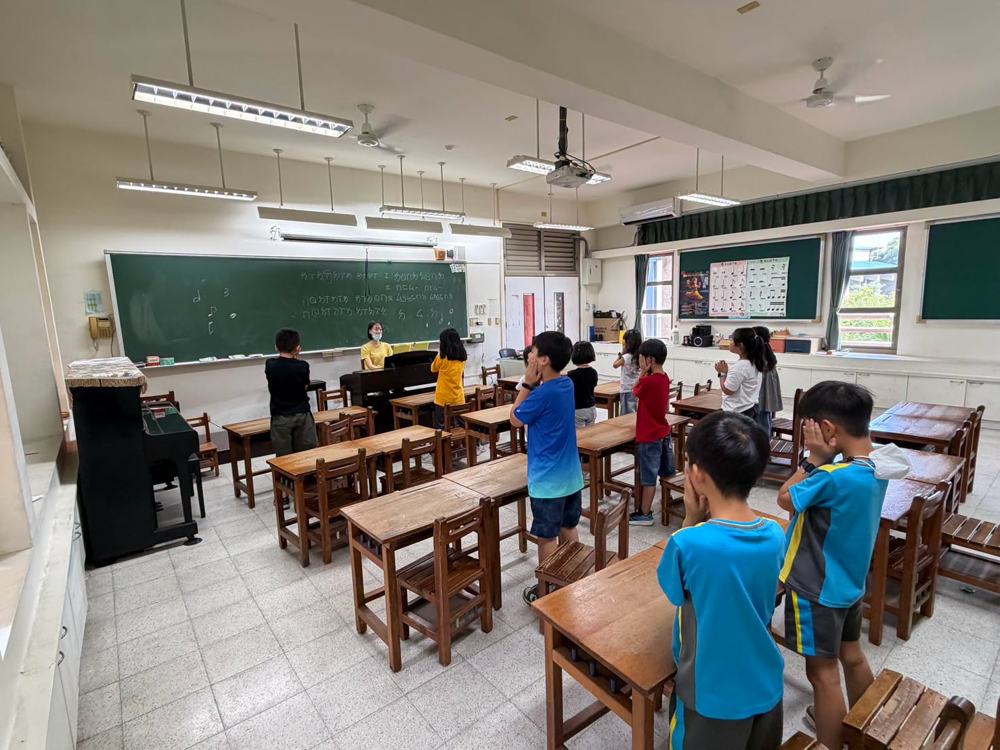
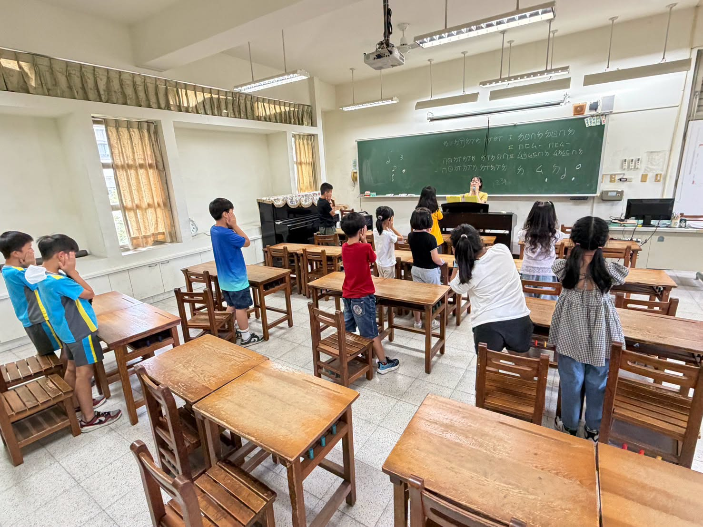
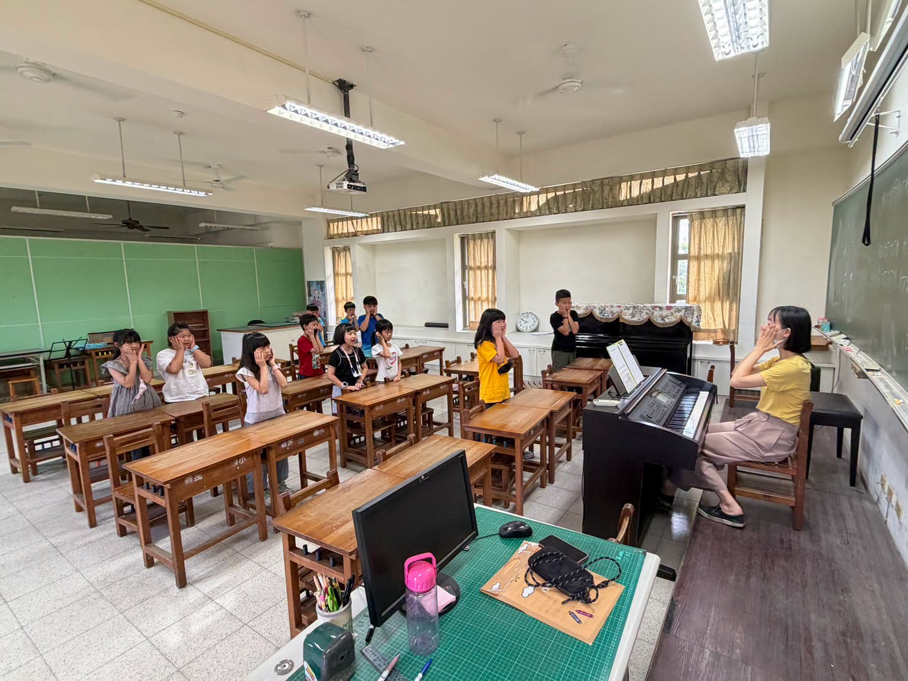
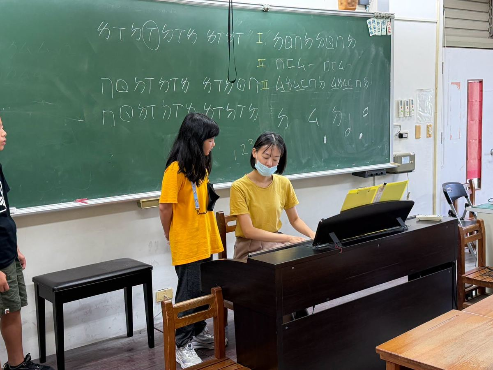
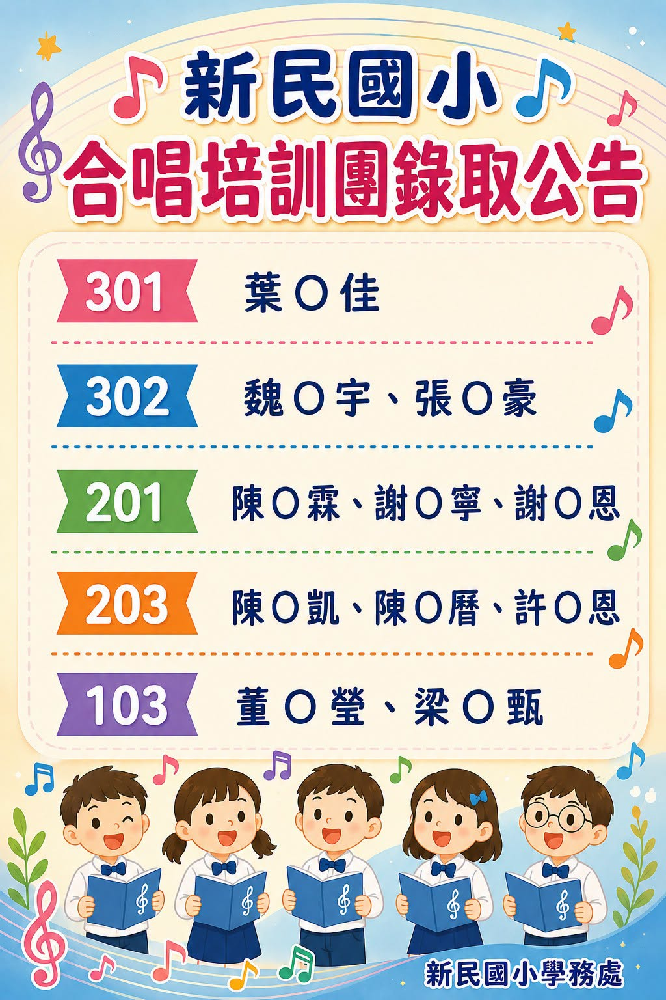

The music journey at Hsinmin Elementary never stops! Although the sixth-grade choir members have graduated and moved on, a new chapter is beginning. This year, the school successfully applied for the national "Arts and Aesthetics — Choral Education Promotion Plan," and a brand-new Choir Training Team will be formed at the start of the next school year.
The Training Team will meet every Tuesday morning during the school's morning activity time, filling the campus with beautiful music. Auditions for this new team were held on June 29, with a total of 13 enthusiastic students taking part — including students from Grades 2 to 4, and even two first-graders who couldn't wait to try. Their courage and passion for music was truly moving!
The teachers were so proud to see every student step up with confidence and give their very best on the spot. We look forward to seeing these young singers grow and shine on stage in the new school year. Keep working hard — we believe you will amaze everyone! 🎵🌟
🎶 美妙歌聲續航！新民合唱培訓團新血注入 🎶
114學年結束，合唱團的六年級學長姐畢業了，但我們的音樂旅程從不停歇！🎒✨今年學校成功申請了「藝術與美感深耕-合唱教育推動計畫」，新的學年度除了高年級團員將全力備戰彰化縣學生音樂比賽，我們更將於新學期成立——【新民合唱培訓團】！未來在每週二的晨光時間，用歌聲喚醒美好的校園早晨。☀️🎵
這次的培訓團甄選，總共有13位同學熱情參與。現場除了2~4年級的同學，還有兩位1年級的小學弟妹也迫不及待前來挑戰，勇敢追尋音樂夢想的態度讓人超級感動！❤️老師肯定大家在台上努力表現自我的自信模樣。🌟
期待開學後，孩子們也能認真投入每一堂課，只要努力學習，相信你們一定會看到驚人的改變！希望很快的，就能在舞台上聽到你們展現自我、散發光芒的美麗歌聲！🎙️💖
Words About Music & Auditioning英語學習角 · 和音樂與甄選有關的小單字
Six key words from this story, each with an example sentence — then a five-question quiz. Tap 🔊 to listen.
六個關鍵字，每個字配一個例句，最後有五題小考。點 🔊 聽發音。
情境：兩位同學聊到合唱培訓團的甄選。